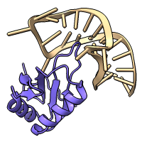
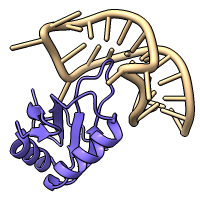
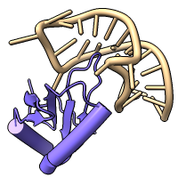
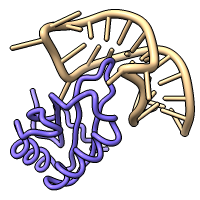

The cartoon or ribbon command shows a simplified backbone representation of the specified biopolymer residues. The command cartoon hide or ~cartoon (ribbon hide or ~ribbon) hides cartoon for the specified residues. The commands hide and show can also be used to control cartoon display. Protein secondary structure (helix and strand) assignments are read from the input structure file or calculated with dssp. Sometimes two helices are adjacent in sequence (not separated by any other residues), and the integer-valued residue attribute ss_id is automatically used to distinguish them. To force combining adjacent helices or breaking a longer helix into shorter ones, ss_id can be changed “manually” with setattr.
For “worms,” specialized cartoons with variable thickness to show the values of a numerical attribute, see the cartoon byattribute or worm command.
See also:
preset,
nucleotides,
define axis,
struts,
shape,
graphics quality,
Actions menu,
Selection Inspector,
Molecule Display icons:


Cartoon settings are only changed when explicitly specified; there are no command defaults, only initial default settings of a structure when it is first opened. Changes only apply to models that are already present, not those opened later.
The following settings can be different for different residues:
smooth factor
The factor controls the balance between smoothing peptide β-strands versus following the exact positions of the α-carbons (initial default 1.0 maximally smoothed, ranging to 0.0 for unsmoothed). Specifying default instead of a numerical value sets the value to 1.0. Smoothing applies only to peptide strands, not to helices, coil, or nucleic acids. Lower values may be desired for strand residues with sidechains displayed, to preclude showing tethers.
suppressBackboneDisplay true | false
Whether showing cartoon for a residue suppresses the display of its backbone atoms (initial default true). The backbone atoms suppressed by cartoons are N, C, and O in amino acids and P, OP1, OP2, OP3, O5', C5', and O3' in nucleic acids. Simultaneous display can be enabled by setting this option to false. Connecting tethers are drawn where displayed backbone atoms are offset from the cartoon.
The cartoon subcommands, however, control per-model settings:
The cartoon path is guided by CA atoms (α-carbons) in peptides and C5' in nucleic acids. To use different atoms, try command shape tube or shape ribbon instead, for example: shape tube nucleic & @P
The transverse orientation of a residue's ribbon segment is set according to the type of secondary structure and/or polymer:
The subcommands cartoon style and cartoon tether control per-model settings. Style examples, with alias for convenience in reusing the settings:
alias nucrib cartoon style nucleic xsect oval width 1.6 thick 1.6• ( cartoon | ribbon ) style atom-spec [ width w ] [ thickness t ] [ xsection oval | rectangle | barbell ] model-options
alias cylinders cartoon style protein modeh tube rad 2 sides 24
alias licorice car style protein modeh default arrows f xsect oval width 1 thick 1Styles similar to these are available as presets, and the default cartoon style can be restored with command: preset ribbon
    initial cartoon style
+ nuc stubsnucrib
(nucleic backbone tubes)nucrib + cylinders
(protein α-helix tubes)nucrib + licorice
(no 2°-structure representations)
• ( cartoon | ribbon ) tether atom-spec [ shape cone | steeple | cylinder ] [ sides Nt ] [ scale scale ] [ opacity opacity ]The cartoon style command controls secondary structure representations, width, thickness, and shape (see examples above). Given without options, it reports the current settings for each atomic model.
The following options can have different values for helix, strand, coil, and/or nucleic in the same model (and these words can be used in the atom-spec). Conversely, a blank atom-spec indicates all applicable models and secondary structure types.
The width w and thickness t are given in Å. The width setting does not affect coil, however, as only its thickness is used in both dimensions. The initial default width and thickness are 2.0 and 0.4 Å, respectively.The xsection or cross-sectional shape of the cartoon can be oval (synonym round), rectangle (synonym square), or barbell with rounded edges and a thinner middle (synonym piping). The barbell cross-section does not apply to coil and does not affect arrowheads. The initial default cross-section is oval for helix and coil, rectangle for strand and nucleic.
The following cartoon style model-options have only a single value per model:
modeHelix tube | wrap | default
The modeHelix option allows showing peptide helices as tubes (curved cylinders) rather than as ribbons spiraling along the backbone atoms (initial default). Spiraling ribbons from the wrap mode wrap around the calculated tubes, whereas those from the initial default mode are oriented as described above. For straight helix-axis cylinders that can be used in distance and angle measurements, see define axis instead.Helix tube calculations use α-carbon coordinates. For a helix of 6 or more residues, a straight tube axis (first principal component) is used if it gives a low average distance to the α-carbons; otherwise, an arc (circle segment) fit to the α-carbon coordinates is used instead. For a helix of 3-5 residues, the axis of an idealized α-helix fit to the α-carbons is used. Increasing the number of sides from 12 is recommended to give tubes a more rounded (smoother) appearance. Other than radius and sides, most helix settings such as width, height, cross-section, and arrows do not apply to helices in the tube mode.
radius r | auto
For peptide helices in the tube mode only, a constant radius r can be specified, otherwise (auto, default) a radius will be determined separately for each helix according to the average distance of the α-carbons to the tube midline, capped at a maximum of 2.5 Å. Where a displayed α-carbon is offset from the tube surface, a tether will be drawn.sides N
The number of straight-line segments used to draw an oval cross-section or the circumference of a tube, with higher numbers corresponding to finer subdivisions (initial default 12). Shading is used to give a smooth, rounded appearance despite this approximation of the shape. See also: cartoon byattribute (worm), graphics qualityarrows true | false
Whether to show arrowheads at the C-terminal ends of peptide strands (initial default true).arrowsHelix true | false
Whether to show arrowheads at the C-terminal ends of peptide helices (initial default false).arrowScale factor
The factor (initial default 2.0) is multiplied by the width of helix or strand to give the arrowhead width.divisions N
The number of divisions per residue along the path of the ribbon. When an atomic structure is opened, the value is set automatically within the range 2-20, using 20 for structures with <20,000 residues. See also: graphics qualitybarSides Nb
The number of straight-line segments used to draw a barbell cross-section (initial default 18). Odd values of barSides Nb are automatically rounded up to the next even number.barScale factor
The factor (range 0.2–1.0, initial default 0.5) is multiplied by the thickness to give the central “bar” thickness of barbell cross-section relative to the edges, where the nominal value applies.worm true | false
Switch between the usual cartoon display, in which the other cartoon style parameters apply, and the specialized worm display, in which the radius may be scaled based on the values of some attribute; same as the commands worm on and worm off (~worm).More examples:
cartoon style width 1.5 thick 0.3
cartoon style helix width 1.5 thick 0.3
car style strand xsection rect width 2
rib style x rect
rib style (#1 & coil) x oval
A tether is drawn between a displayed α-carbon (CA atom) and the corresponding cartoon segment where they are offset, such as in smoothed strands or helix tubes. Tethers are also drawn for displayed proline N and nucleic acid C3' and C4' atoms, and when backbone suppression is turned off, additional displayed backbone atoms.
Tether shape can be:
The sides option controls the number of planar facets used to draw a tether (range 3-10, initial default 4). The scale option sets tether base radius relative to the display radius of the corresponding α-carbon (range 0.0-1.0, initial default 1.0). The tether color tracks the color of the corresponding α-carbon. The tether opacity value (1 – transparency) can range from 0.0 (completely transparent) to 1.0 (completely opaque), with initial default 0.5.
- cone (initial default) – cone with base at the α-carbon, point at the cartoon
- steeple – cone with base at the cartoon, point at the α-carbon
- cylinder
Tethers can be hidden using opacity 0.
Usage: ( cartoon byattribute | worm ) attribute-name model-spec [ values-and-radii ] [ noValueRadius radius ] [ sides N ]
Usage: ( cartoon byattribute | worm ) ( on | off )
Usage: ~worm
A worm is a specialized cartoon in which the radius varies to show the values of a numerical attribute. Attribute values are mapped to worm radius on a per-residue basis, and only biopolymer chains can be shown as worms. If an atom attribute is given, the average value over all atoms in a residue is used for that residue. Several attributes are present automatically, but others can be defined by the user arbitrarily or created by various ChimeraX tools and commands (details...). The graphical interface to cartoon byattribute is Render by Attribute. See also: color byattribute, size byattribute
The values and radii specification can be given as two or more space-separated pairs of the form:
value:radius
...where value can be min or max as well as a numerical value of the attribute. The default mapping is:
min:0.25 max:2.0
The min and max are determined from the residues within the specified model or models (“all” if the specification is blank, as per the usual convention) and that can be represented by a cartoon, namely peptide and nucleotide chains.
The noValueRadius option indicates what radius to use for residues without an assignment (or within atomic structures without an assignment) for the specified attribute (default 0.1 Å).
The sides option sets the number of facets N around the circumference of the worm, with higher values giving a more smoothly rounded shape. The default for worms is 24 (the current maximum). This parameter can also be adjusted with cartoon style and graphics quality.
Once generated, the worm radii are remembered separately from the other cartoon parameters (as a residue attribute named worm_radius), and it is possible to toggle back and forth between the previous non-worm cartoon and a previously defined worm display. This can be done with worm off (equivalent to ~worm or cartoon byattribute off) and worm on (equivalent to cartoon byattribute on). As with other Boolean settings, synonyms for on are true, True, 1, and synonyms for off are false, False, 0. Example commands:
cartoon byattr bfactor min:0.2 max:2.5
worm bfactor min:0.2 max:2.5
~worm
These commands do not hide/show worms, they merely switch between worm and non-worm cartoon styles without changing whether the cartoon is displayed. As with other cartoon displays, the command cartoon hide or ~cartoon (ribbon hide or ~ribbon) hides worm for the specified residues. The general hide and show commands can also be used.